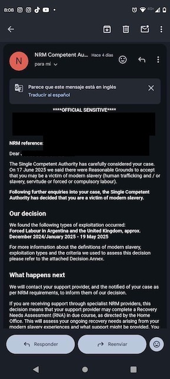

September 16th Update
It's been a while since we've had any news but we now have absolute proof that the band members taken in to safe keeping following the traffic accident involving a white van containing members of the OLD TIME SAILORS band have been confirmed as VICTIMS of Modern Day Slavery. The type of expolitation has been defined as forced labour. By definition, the members of the 2024 band AND the previous years are ALL VICTIMS of Modern Day Slavery.
The Single Competent Authority (SCA) is a team within the UK Home Office that administers the National Referral Mechanism (NRM), a framework for identifying and supporting victims of modern slavery and human trafficking. Please see the picture below.
The real question now is why haven't the authorities charged these individuals? Why was Andres Guzman and Brisa Vigna allowed to leave the country?

As the collective, we would like to thank those who have been vocal in your support in sharing the truth of the band to venues and those who are supporting. We have found that many fans and venues have been told lies that those who have been arrested have been cleared of all charges and the investigation had been closed.
Raising your voices and standing with the victims has had an incredible knock on effect behind the scenes, though we are not out of the woods yet, progress has been able to be made. We are saddened by some venues who, despite being emailed with evidence and being told what has happened, have responded by deleting and blocking people who try and tell the truth on their event page, we have noted down who these venues are.
We would also sincerely thank all of those venues that took their responsibilities seriously and cancelled Old Time sailors when these allegations came to light.